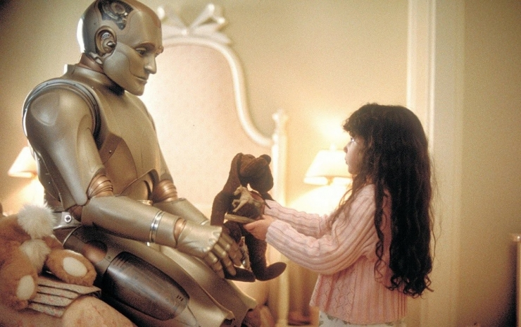

You choose to seek a coexistence between humans and machines, attempting to resolve the conflicts between humanity and robots.
During this exploration, you propose a new model for human-machine coexistence. Robots gain more freedom but remain under certain regulations to ensure the safety of human society.
However, this proposal has sparked controversy. Some see it as a compromise, while others view it as the future of human-machine harmony.
In this process, you have the option to: